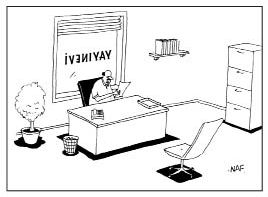

Ne diyelim?
Bu terim herkes için farklı anlamlar ifade ediyor...
DIMITRI: Senin derdin ne dostum, biliyor musun? Çok fazla düşünüyorsun.
TASSO: Kime göre?
DIMITRI: Mesela Akhilleus'a göre.
TASSO:Peki, Sokrates'e göre?
DIMITRI: Ha... E, doğru, Sokrates'e göre andavallının teki sayılırsın.
Göreli Gerçeklik
Gerçek göreli midir yoksa mutlak mı?
Kadim Taocu filozof Zhuang Zi rüyasında bir kelebek olduğunu gördüğü rüyadan uyanır ve kendisine şu soruyu sorar: Şu anda rüyasında Zhuang Zi olduğunu gören bir kelebek miyim yoksa?
Modern Batı dünyasında bilginin bilene göreliliği, filozoflar arasında saplantıya dönüşmüştür. Daha önce gördüğümüz üzere, George Berkeley, "fiziksel nesnelerin" sadece zihne göre var olduğunu söyleyecek denli ileri gitmişti...
* * *
Yirminci yüzyılda Harvard'dan bir profesör psikedelik ilaçlarla deneyler yapmış ve gördüklerinin göreliliğinden büyülenmişti. Hayır, Timothy Leary'den[18] bahsetmiyoruz. Ondan çok öncesinde bu deneyi yapan William James'ti. Gülme gazı soluyan James her şeyin nihai birliğini gördüğü fikrine kapılmış ancak ilacın etkisi geçtikten sonra kozmik görülerini anımsayamamıştı. Bunun üzerine ikinci deneyinde eline bir kalem bağlamış ve önüne not defterini koymuştu. Gerçekten de müthiş bir fikre ulaştı ve aklına geleni kâğıda dökebilmeyi başardı. Saatler sonra zihni iyice açılınca kâğıda döktüğü devrim yaratacak bilgiyi okudu: "Her şey petrol gibi kokuyor."
Önce hayal kırıklığına uğrayan Profesör James çok geçmeden işin felsefi yönüne ulaştı. Esas soru, gülme gazı etkisindeyken müthiş görünen fikirlerin aslında bayağı fikirler mi olduğu yoksa "Her şey petrol gibi kokuyor" görüşündeki gibi müthiş parlaklığın ancak gülme gazının etkisindeyken mi algılanabileceğiydi.
James'in yaptığı analizin fıkra gibi koktuğu gerçek...
* * *
Zamanın Göreleliği
Zaman algısının göreliliği üstüne çok fıkra vardır. Örneğin:
Bir salyangoz, iki kaplumbağa tarafından soyulmuştur. Polis, salyangoza olayın nasıl cereyan ettiğini sorar. "Bilemiyorum," der salyangoz, "her şey o kadar hızlı oldu ki..."
Yalnız bu salyangozun başına gelmeyen kalmamış:
Kapı çalınır, kadın kapıyı açar. Eşikte bir salyangoz durmaktadır. Kadın etrafa bakınır, salyangozu alıp bahçeye fırlatır ve kapıyı kapar. İki hafta sonra gene kapı çalınır, kadın kapıyı açar ve salyangoz yine kapıdadır.
Salyangoz: "Neydi o tavır öyle?"
Sınırlı zaman ile sonsuzluk arasındaki görelilik felsefi düşüncenin ana konularından biridir. Haliyle fıkraların da:
Adam Tanrı'ya seslenir. "Tanrım," der, "bir soru sorabilir miyim?"
"Tamam," der Tanrı. "Sor bakalım."
"Tanrı'm, senin için bir milyon yıl bir saniyedir diyorlar, doğru mu?"
"Evet, doğru."
"Peki, bir milyon dolar senin için nedir?"
"Benim için bir milyon dolar, bir penidir evlâdım."
"A, iyi," der adam. "O zaman bana bir peni verebilir misin?"
"Tabii," der Tanrı, "Bekle bir saniye..."

"Maalesef 'Bir Kelebeğin Yaşamı: Bir Otobiyografi' başlıklı
kitabınızı yayınlayamayacağız. Tek sayfa çünkü."
Dünya Görüşlerininin Göreleliği
Farklı bakış açılarının göreliliği üzerine de tonla fıkra vardır:
Bir Fransız bara girer. Omuzunda smokin giydirilmiş bir papağan vardır.
Barmen: "Vay! Çok tatlı bu yahu! Nereden aldınız?"
Papağan: "Fransa'dan. Orada bunlardan milyonlarca var."
Yirminci yüzyıl Amerikan filozofu W.V.O. Quine dünya görüşümüzün farklı bir perspektif elde edebilmek için dışına çıkamayacağımız bir çerçeveyle, yani ana dilimizle göreli olduğunu yazmıştı. Bizimkiyle bağlantısız bir dilden gelen bir terimi nasıl dilimize çevirebileceğimizi kesinkes bilebilmemiz mümkün değildir. Bir başka dili konuşan kişinin, bizim işaret edip "tavşan" dediğimiz şeyi işaret ederek, mesela "gavagai" dediğini görebiliriz ama "tavşan parçalarının birleşimini" mi yoksa "ardışık tavşan aşamalarını" mı veya tavşanlı başka bir şeyi mi kastettiğini kesinkes bilemeyiz.
İki Yahudi, koşer yiyecek sunan bir Çin lokantasındadır. Menüye bakıp siparişlerini Yidiş dilinde verirlerken garson da onlarla Yidiş dilinde konuşur.Yemek sonrası çıkarlarken lokanta sahibine, garsonla Yidiş dilinde konuşabilmenin pek hoş bir sürpriz olduğunu söylerler.
"Şşş," der lokanta sahibi. "İngilizce öğrendiğini zannediyor."
Bu fıkra, Quine'ın radikal çeviri sorunu olgusunu on ikiden vurmaktadır. Çinli garson tüm Yidiş sözcükleri birbirlerine, Yahudi müşteriler gibi ilintilendirebilmektedir. Ancak Yidiş diline dair tüm bilgisi önemli, sistematik bir yolla yoldan çıkmıştır çünkü İngilizce konuştuğunu zannetmektedir.
Neyin yabancı dil sayılacağı fikri bile konuşan kişiye göre değişebilir. Uluslararası ticaret dünyasından gelen şu fıkraya bir bakın:
Çokuluslu bir şirket, sekreter aranıyor ilanı verir. İşe başvuranlar arasında bir köpek de vardır; daktilo sınavını geçer ve iş görüşmesine girme hakkını kazanır. İnsan kaynakları müdürü sorar:
"Herhangi bir yabancı dil biliyor musunuz?"
"Miyav."
Değerlerin Göreleliği
Michel Foucault başka bir göreliliğe odaklanmıştı: kültürel değerlerin toplumsal iktidara göreliliği. Kültürel değerlerimiz, özellikle normal saydıklarımız, toplumsal denetimin nasıl sağlanacağını belirler ve onun tarafından belirlenir. Örneğin kim akıl hastası sayılır? Buna kim karar verir? Akıl hastası olarak belirlenmişler için akıl hastası olarak belirlenmek ne anlam taşır? Onları denetim altında tutanlar için bu ne anlama gelir? Ve kimdir onları denetim altında tutanlar? Bu soruların yanıtları toplum içindeki iktidar düzenlemeleri değiştikçe değişir. Bir çağda denetimi elinde tutan grup ruhban sınıfıyken, bir diğer çağda denetim doktorlara geçer. Bu durum, akıl hastası sıfatıyla çağrılan kimselere nasıl davranıldığına dair açılımlar içerir. Kısacası, her daim geçerli ve mutlak bildiğimiz değerler aslında kimin iktidarda olduğuna ve iktidarı nasıl kullandığına göre değişen sürekli bir tarihsel akış içindedirler.
Pat: Hey, Mike! Çevreyolundayım ve seni yeni cep telefonundan arıyorum!
Mike: Aman dikkat et, Pat. Daha demin radyoda kaçığın tekinin çevreyolunda ters yönde gittiğini duyurdular.
Pat: Kaçığın teki mi? Yahu çevreyolunda yüzlercesi var!
Saf aklın bakış açısından Pat, radyo spikeri kadar haklıdır. Ona göre diğer herkes yanlış yönde gitmektedir. E, öyleyse neden bu fıkra, sadece iki farklı bakış açısının çarpışması değil de bir fıkradır? Foucault'nun vurguladığı nokta yüzünden: nihai anlamda gidilecek yönü iktidar belirlemektedir.
Plato'dan bu yana filozofların bir başka meselesi de geçici değerlerle ebedi değerler arasındaki göreliliktir. Ve yine bir fıkra, bahsettiğimiz konuyu yerine yerleştiriyor:
Adamcağız ölmek üzereymiş.Yalnız tüm yaşamı boyunca dur durak bilmeden çalışıp edindiği servetini yanında götüremeyeceği fikrine çok bozuluyormuş. Sonunda karar vermiş ve hiç değilse servetinin birazını yanına alabilmek için dua etmeye başlamış.
Meleklerden birisi duasını duyup gelmiş ve adama yanına hiçbir şey alamayacağını söylemiş. Ama adam yalvarmış,Tanrı'yla konuşmak istediğini, O'nu kuralları azıcık esnetmeye ikna edebileceğini söylemiş.
Melek bir süre sonra tekrar adamın başucunda belirmiş ve Tanrı'nın onca dürüst çabasını göz önüne aldığını ve bir seferliğe mahsus istisna yapmayı kabul ettiğini bildirmiş. "Yalnız," demiş melek, "yanına sadece bir valiz alabilirsin." Adam çok sevinmiş bulabildiği en büyük valizi almış, içini altın külçeleriyle doldurmuş ve başucuna koymuş.
Adam çok geçmeden ölmüş ve yolları altın taşlarla döşeli Cennet'in kapısına varmış. Kapıdaki Aziz Peter valizi görünce, "Dur bakalım," demiş. "İçeri bir şey sokamazsın."
Adam durumu anlatmış ve inanmıyorsa Tanrı'ya sormasını söylemiş. Aziz Peter bir süre sonra kapıya gelmiş,"Haklıymışsın," demiş, "bir valiz getirmene izin verilmiş. Pekâlâ, yalnız seni içeri almadan önce valizdekileri kontrol etmem lazım."
Adam valizi uzatmış. Aziz Peter, adamın ta Cennet'e getirecek denli değer verdiği şeyleri görmek için valizi açmış ve hayretle, "Ne?" demiş, "kaldırım taşı mı getirdin yani?"
Mutlak Görelelik
Birçok felsefi hata göreli bakış açılarına mutlakmış gibi davranmaktan kaynaklanır. Thomas Jefferson, İngiliz filozof John Locke'nin görüşlerinden ödünçle yaşama, özgürlük ve mutluluğun peşinde koşma haklarını, muhtemelen hepsini evrensel ve mutlak gördüğü için, "aşikâr" ilan etmişti. Ama bunların başka kültürden bir insan —mesela mutluluğun peşinden koşmanın tam anlamıyla kâfirlik olacağına inanan bir radikal dinci— için o derece aşikâr olmadığı açıktır.
Ters yönde hata da mümkündür. Mutlak bir şeyi göreli zannedebiliriz:
Bir savaş gemisinde gözcü, tam karşıda bir ışık görür. Hemen kaptana bildirir ve kaptan karşıdan gelen gemiye ışıkla "Derhal rotanızı yirmi derece değiştirin!" mesajı yollar.
Karşıdan yanıt gelir: "Siz derhal rotanızı yirmi derece değiştirin!"
Kaptan kızar. Bir mesaj daha yollar: "Ben bir kaptanım. Çarpışma rotasındayız. Derhal rotanızı yirmi derece değiştirin!"
Yanıt gecikmez: "Ben ikinci sınıf denizciyim ve rotanızı derhal yirmi derece değiştirmenizi emrediyorum!"
Kaptan öfkeden saçını başını yolmaktadır. Bir mesaj daha yollar: "Ben bir savaş gemisindeyim!"
Yanıt gecikmez: "Ben de deniz fenerindeyim."
Bir dahaki sefere Çin yemeği ısmarlarken göreliliği unutmayın: Çinliler ona sadece yemek diyor.
* * *
DIMITRI: Ha, sen mutlak gerçeklik yoktur, gerçeklik görelidir diyenlerdensin yani.
TASSO: Aynen.
DIMITRI: Eminsin yani?
TASSO: Mutlaka.